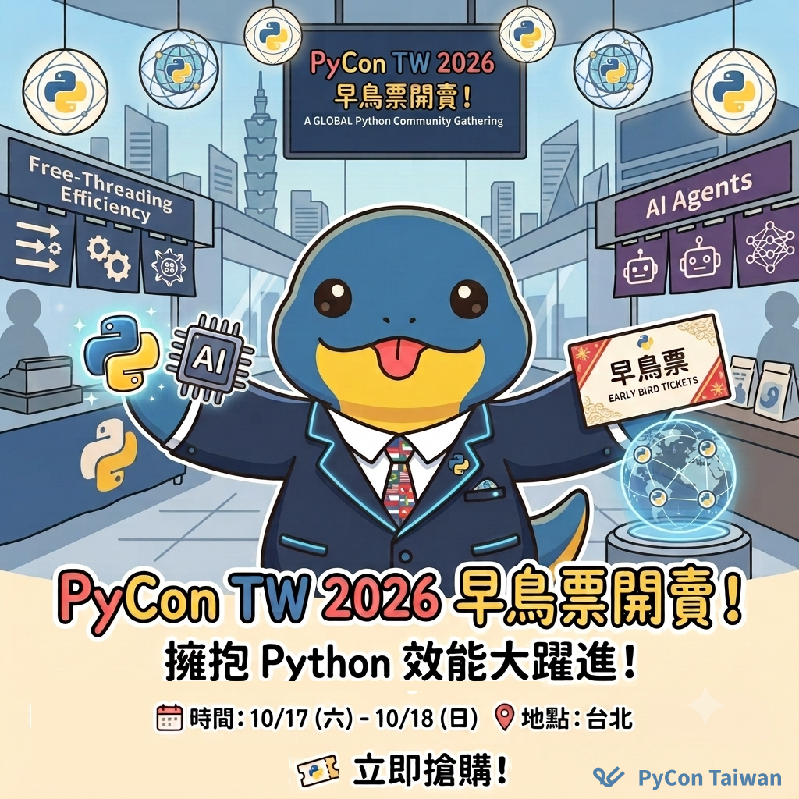
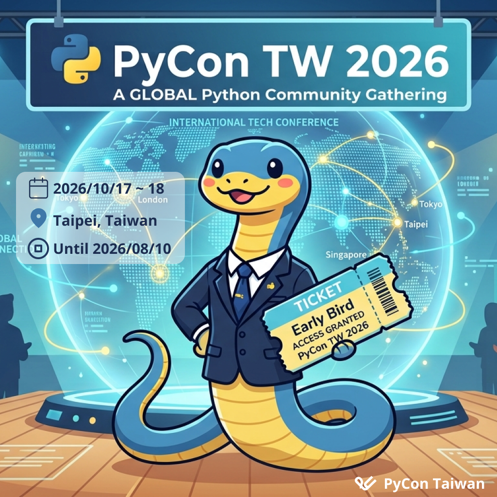

限時早鳥 PyCon TW 2026 迎接 Python 史上最具變革性的一年
Posted on Mon 20 July 2026 in announcement


限時早鳥 PyCon TW 2026迎接 Python 史上最具變革性的一年
2026 年，Python 迎來了令人振奮的技術突破。隨著 Free-threading (No GIL) 正式解放多執行緒效能、Lazy Imports 加快模組載入速度，以及 AI 代理框架 (Agentic Frameworks) 的全面爆發，Python 正在以前所未有的速度重塑開發者的工作流與技術邊界，從 Free-Threading 到 AI 代理的全面進化！
🔥 為什麼你不能錯過 PyCon TW 2026 🔥
無論是專注於 AI 與機器學習、資料科學、自動化 DevOps，還是尋求突破的 Web 開發者，PyCon Taiwan 2026 都將帶你站在技術的最前線！
- 技術狂歡 直擊趨勢：匯聚國內外頂尖講者，乾貨滿載。
- 實戰交流：從開源專案到企業級應用，聆聽最真實的 Case Study 與架構避坑指南。
- 社群連結 激盪靈感：在這個專屬於 Pythonista 的年度盛會，結識志同道合的開發者，尋找下一個職涯機會或神仙隊友
📅 時間：2026 年 10 月 17 日 (六) 至 10 月 18 日 (日)
📍 地點：臺北醫學大學 (暫訂)
⏳ 早鳥優惠限時發售：只到 8 月 10 日
👉 立即搶購： https://lihi1.me/9wIMG
今年秋天，我們在 PyCon TW 2026 相聚，一起寫下 Python 的下一個篇章！
Limited Time Early Bird Tickets for PyCon TW 2026 are NOW OPEN!
Are you ready for the most transformative year in Python history?
In 2026, Python is breaking boundaries. With the official rollout of Free-threading (No GIL) unlocking true multithreading performance, Lazy Imports speeding up module loading, and the explosion of Agentic AI Frameworks, Python is reshaping developer workflows at an unprecedented pace.
🔥 Why you should attend
Whether you're into AI/ML, Data Science, DevOps, or Web Development, PyCon Taiwan 2026 will put you at the forefront of this tech revolution!
Deep Dives into Tech Trends: Hear from top-tier local and global speakers on post-GIL architecture, AI model integration, and advanced data analytics.
Real-World Case Studies: Gain practical insights from open-source projects to enterprise-level applications.
Global Community Networking: Connect with fellow Pythonistas, discover new career opportunities, and find your next collaborative partner.
📅 Date: Oct 17 (Sat) - Oct 18 (Sun), 2026
📍 Location: Taipei Medical University (Tentative)
⏳ Early Bird Tickets Available until Aug 10!
👉 Get Your PyCon TW 2026 Tickets Here: https://lihi1.me/9wIMG
Let’s write the next chapter of Python together this autumn in Taipei!